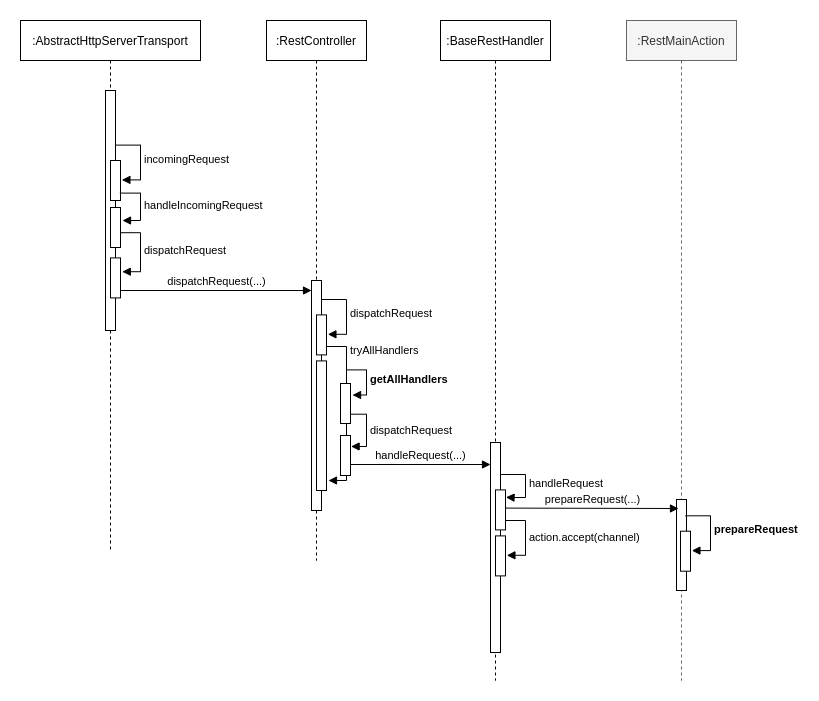

Ch08-Elasticsearch 之 Http
August 25, 2021
Elasticsearch 之 Http
以最基本的 curl -X GET http://localhost:9200 请求为例，如下图所示。

1. RestHandler 路由 #
RestController 这个类里面维护了一个 handlers，在 Node 启动的时候，会将所有 ES 对外暴露的 URL 注册到这个 handlers 里面，组织形式有点类似于 URL 的分层结构（多叉树）。
PathTrie<MethodHandlers> handlers = new PathTrie<>(RestUtils.REST_DECODER)
在 RestController 中通过 getAllHandlers（实际上就是遍历前面生成的多叉树）获取到实际的 MethodHandlers，对于/的访问可以对应的获取到 RestMainAction 处理逻辑，简单来说，这里仅仅处理 HTTP 请求，不会对实际的业务逻辑处理。
public class RestMainAction extends BaseRestHandler {
@Override
public RestChannelConsumer prepareRequest(final RestRequest request, final NodeClient client) throws IOException {
return channel -> client.execute(MainAction.INSTANCE, new MainRequest(), new RestBuilderListener<MainResponse>(channel) {
@Override
public RestResponse buildResponse(MainResponse mainResponse, XContentBuilder builder) throws Exception {
return convertMainResponse(mainResponse, request, builder);
}
});
}
}
2. TransportAction 路由 #

上图中的 actions 在 Node 启动的时候就完成了初始化。所以当 RestMainAction 的 client 使用 MainAction.INSTANCE 的时候，就可以正确的映射到对应的 TransportAction，即 TransportMainAction。
public class TransportMainAction extends HandledTransportAction<MainRequest, MainResponse> {
protected void doExecute(Task task, MainRequest request, ActionListener<MainResponse> listener) {
ClusterState clusterState = clusterService.state();
listener.onResponse(
new MainResponse(nodeName, Version.CURRENT, clusterState.getClusterName(),
clusterState.metadata().clusterUUID(), Build.CURRENT));
}
}
TransportAction 中定义了具体的处理逻辑，借由 doExecute 方法实现。比如在 TransportMainAction##doExecute 就定义了集群的基本信息的获取方式和返回的内容。